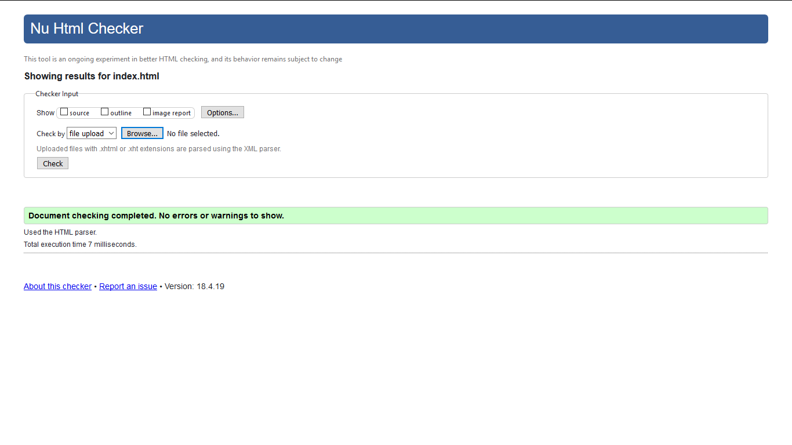
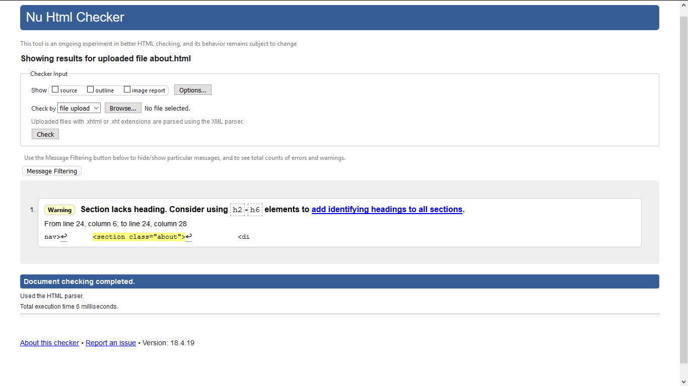
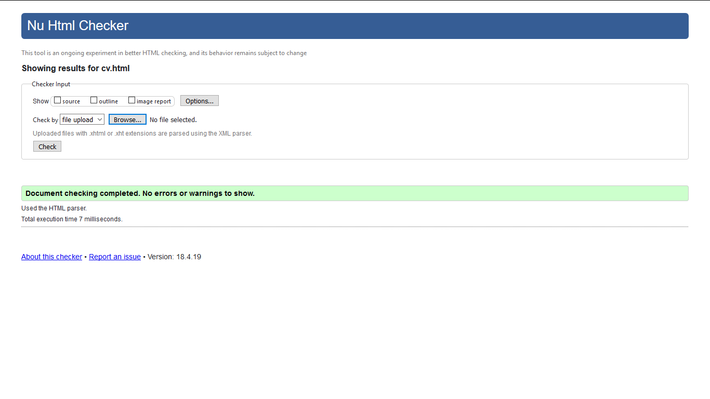
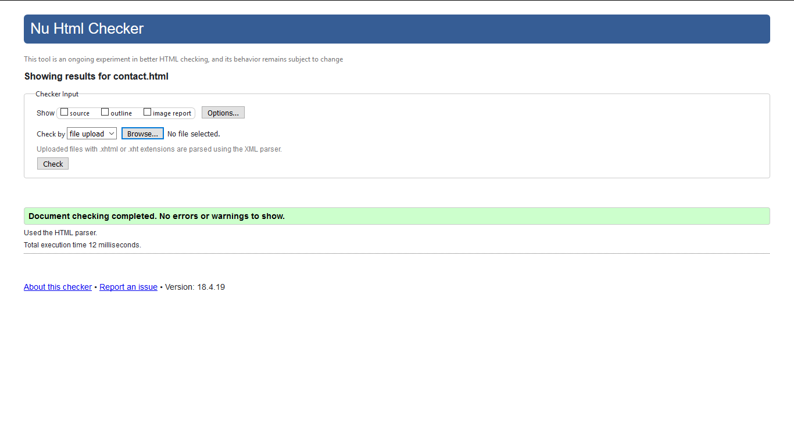
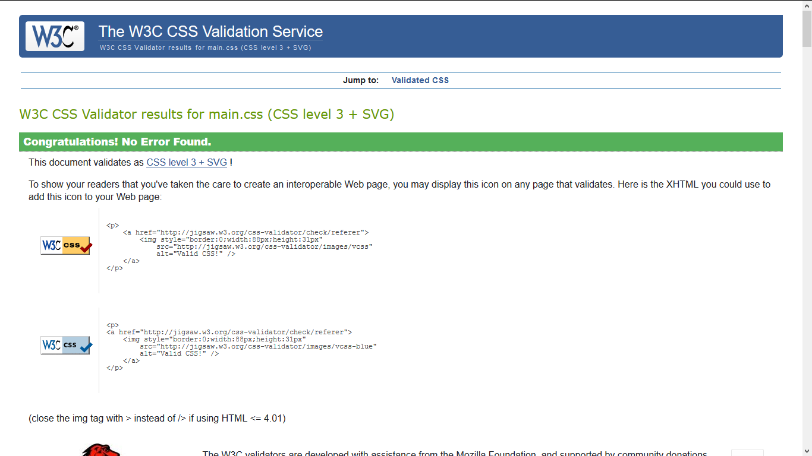

Introduction
The CSY 1018-Web Development Term First have the ultimate focus in the web designing part of the websites. In term First, we also got to introduced to the GitHub, HTML5, CSS3 and many other different HTML tags and CSS3 property has been taught throughout the Term First.In this term we are told to make our own CV websites which include the following details.In this term we are told to make our own CV websites which include the following details.
- Index
- About
- CV
- Social
- Contact
- Models_gp
Index page
This is the main page as well as the landing page of the CV website that include the image of my own and a bit content about myself. Talking about the inside interface and the overall structure HTML5 and CSS3 has been used in the site. When the user hovers the mouse cursor in the image the image itself zoom in. The overall font-style Roboto https://fonts.google.com/specimen/Roboto is used in the site. On the other hand, when the user hover in the navigation bar (menu) the text color is changed. The flex property has also been used to make the divisions to appear two different side. Color gradient also used in the header and footer bar, the specific gradient Hex color is used for this site https://uigradients.com/#Mirage".
Evidence Of Index.html Page Validation
About Page
This is a about page which include the overall information about myself, also include the picture of my own.The section part is divide by using division and flex property not any transition is used in this page only the text size and style are changed in the page.
Evidence Of about.html page Validation
Cv
This is the CV page of the website which include the detail information about myself like High School, Personal Experience etc. Here also I go with the flex property to make the divisions to appear two different side. Here the font size is a bit larger than the other pages.
Evidence of CV.html page validation
Social
This is the social page of my personal CV website, which include the social link of the different social sites. https://www.flaticon.com/packs/social-network-logo-collection this is the site from where the icon pack is taken. The icon has the hover opacity effect animation. The design is original and not taken from any of the websites.
Evidence of Social.html page validation

Contact
This page contains the form through which the user can give the feedback.Its also use the flex property to make the divisions to appear two different sites. It also includes the maps location where I live. Placeholder also used in the first name, sur name, email and feedback area. Hence, the button also used to send message.
Evidence of Contact.html page validation
Eveidence of Css Validation
Conclusions
The six pages compelete the assignment.All code are validity as per the requirement of the assignment,the following screenshots are the complete validation of the overall webpages.The design part are analyzed by from different source. The overall code are edited with sublime text editor,different beautiful design are used in the site with as per the assignment requirement,this assignment also teaches about the different new animations and transition of HTML5 and CSS3. As per the requirement of the assignment all the proceudure are fulfilled.
Reference
www.w3school.com
https://fonts.google.com/specimen/Roboto
https://uigradients.com/#Mirage
https://www.flaticon.com/packs/social-network-logo-collection
The useful reference of the website is taken from this following site.